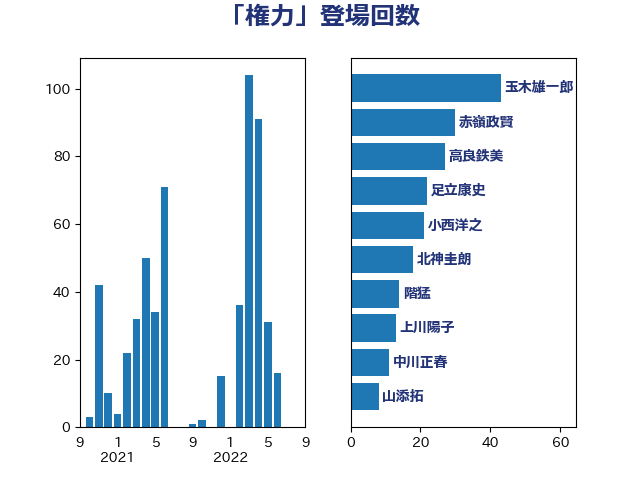

単語「権力」

| 玉木雄一郎 | 国民民主党 | 43 回 |
| 赤嶺政賢 | 日本共産党 | 30 回 |
| 高良鉄美 | 無所属 | 27 回 |
| 足立康史 | 日本維新の会 | 22 回 |
| 小西洋之 | 立憲民主党 | 21 回 |
| 北神圭朗 | 無所属 | 18 回 |
| 階猛 | 立憲民主党 | 14 回 |
| 上川陽子 | 自由民主党 | 13 回 |
| 中川正春 | 立憲民主党 | 11 回 |
| 山添拓 | 日本共産党 | 8 回 |
| 芳賀道也 | 国民民主党 | 8 回 |
| 松沢成文 | 日本維新の会 | 7 回 |
| 田村智子 | 日本共産党 | 7 回 |
| 北側一雄 | 公明党 | 6 回 |
| 奥野総一郎 | 立憲民主党 | 6 回 |
| 山下芳生 | 日本共産党 | 6 回 |
| 山田勝彦 | 立憲民主党 | 6 回 |
| 本村伸子 | 日本共産党 | 6 回 |
| 泉健太 | 立憲民主党 | 6 回 |
| 藤岡隆雄 | 立憲民主党 | 6 回 |
| 山田賢司 | 自由民主党 | 5 回 |
| 後藤祐一 | 立憲民主党 | 5 回 |
| 新垣邦男 | 立憲民主党 | 5 回 |
| 新藤義孝 | 自由民主党 | 5 回 |
| 浅田均 | 日本維新の会 | 5 回 |
| 福島伸享 | 無所属 | 5 回 |
| 金子恭之 | 自由民主党 | 5 回 |
| 伊藤孝恵 | 国民民主党 | 4 回 |
| 古川禎久 | 自由民主党 | 4 回 |
| 吉良よし子 | 日本共産党 | 4 回 |
| 鈴木庸介 | 立憲民主党 | 4 回 |
| 小沼巧 | 立憲民主党 | 3 回 |
| 岸真紀子 | 立憲民主党 | 3 回 |
| 石橋通宏 | 立憲民主党 | 3 回 |
| 笠井亮 | 日本共産党 | 3 回 |
| 藤田文武 | 日本維新の会 | 3 回 |
| 三宅伸吾 | 自由民主党 | 2 回 |
| 中谷元 | 自由民主党 | 2 回 |
| 中野洋昌 | 公明党 | 2 回 |
| 倉林明子 | 日本共産党 | 2 回 |
| 嘉田由紀子 | 無所属 | 2 回 |
| 大岡敏孝 | 自由民主党 | 2 回 |
| 小池晃 | 日本共産党 | 2 回 |
| 小沢雅仁 | 立憲民主党 | 2 回 |
| 山谷えり子 | 自由民主党 | 2 回 |
| 岸田文雄 | 自由民主党 | 2 回 |
| 末松義規 | 立憲民主党 | 2 回 |
| 松原仁 | 立憲民主党 | 2 回 |
| 林芳正 | 自由民主党 | 2 回 |
| 柴山昌彦 | 自由民主党 | 2 回 |
| 森本真治 | 立憲民主党 | 2 回 |
| 江田憲司 | 立憲民主党 | 2 回 |
| 浮島智子 | 公明党 | 2 回 |
| 牧山ひろえ | 立憲民主党 | 2 回 |
| 磯崎仁彦 | 自由民主党 | 2 回 |
| 紙智子 | 日本共産党 | 2 回 |
| 羽田次郎 | 立憲民主党 | 2 回 |
| 菅義偉 | 自由民主党 | 2 回 |
| 辻元清美 | 立憲民主党 | 2 回 |
| 重徳和彦 | 立憲民主党 | 2 回 |
| 馬場伸幸 | 日本維新の会 | 2 回 |
| 三木圭恵 | 日本維新の会 | 1 回 |
| 中谷一馬 | 立憲民主党 | 1 回 |
| 井上信治 | 自由民主党 | 1 回 |
| 伊波洋一 | 無所属 | 1 回 |
| 伊藤岳 | 日本共産党 | 1 回 |
| 加藤勝信 | 自由民主党 | 1 回 |
| 勝部賢志 | 立憲民主党 | 1 回 |
| 古賀之士 | 立憲民主党 | 1 回 |
| 吉田はるみ | 立憲民主党 | 1 回 |
| 吉田宣弘 | 公明党 | 1 回 |
| 塩川鉄也 | 日本共産党 | 1 回 |
| 大串博志 | 立憲民主党 | 1 回 |
| 大西健介 | 立憲民主党 | 1 回 |
| 安江伸夫 | 公明党 | 1 回 |
| 宮口治子 | 立憲民主党 | 1 回 |
| 宮本徹 | 日本共産党 | 1 回 |
| 山下雄平 | 自由民主党 | 1 回 |
| 山本太郎 | れいわ新選組 | 1 回 |
| 岡田克也 | 立憲民主党 | 1 回 |
| 平木大作 | 公明党 | 1 回 |
| 徳永久志 | 立憲民主党 | 1 回 |
| 志位和夫 | 日本共産党 | 1 回 |
| 打越さく良 | 立憲民主党 | 1 回 |
| 杉本和巳 | 日本維新の会 | 1 回 |
| 梅村みずほ | 日本維新の会 | 1 回 |
| 櫻井周 | 立憲民主党 | 1 回 |
| 沢田良 | 日本維新の会 | 1 回 |
| 浜田聡 | NHK党 | 1 回 |
| 浦野靖人 | 日本維新の会 | 1 回 |
| 滝波宏文 | 自由民主党 | 1 回 |
| 玄葉光一郎 | 立憲民主党 | 1 回 |
| 田島麻衣子 | 立憲民主党 | 1 回 |
| 田村憲久 | 自由民主党 | 1 回 |
| 矢倉克夫 | 公明党 | 1 回 |
| 石井苗子 | 日本維新の会 | 1 回 |
| 石川大我 | 立憲民主党 | 1 回 |
| 緑川貴士 | 立憲民主党 | 1 回 |
| 茂木敏充 | 自由民主党 | 1 回 |
| 菊田真紀子 | 立憲民主党 | 1 回 |
| 近藤和也 | 立憲民主党 | 1 回 |
| 逢沢一郎 | 自由民主党 | 1 回 |
| 野田聖子 | 自由民主党 | 1 回 |
| 鈴木貴子 | 自由民主党 | 1 回 |
| 鎌田さゆり | 立憲民主党 | 1 回 |
| 青木愛 | 立憲民主党 | 1 回 |
| 音喜多駿 | 日本維新の会 | 1 回 |